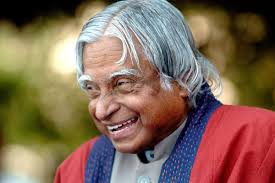

Early Life
Avul Pakir Jainulabdeen Abdul Kalam was born on 15 October 1931, to a Tamil Muslim family in the pilgrimage centre of Rameswaram on Pamban Island, then in the Madras Presidency and now in the State of Tamil Nadu. His father Jainulabdeen Marakayar was a boat owner and imam of a local mosque; his mother Ashiamma was a housewife. His father owned a ferry that took Hindu pilgrims back and forth between Rameswaram and the now uninhabited Dhanushkodi.Kalam was the youngest of four brothers and one sister in his family. His ancestors had been wealthy Marakayar traders and landowners, with numerous properties and large tracts of land. Marakayar are a Muslim ethnic group found in coastal Tamil Nadu and Sri Lanka who claim descent from Arab traders and local women. The family business had involved trading groceries between the mainland and the island and to and from Sri Lanka, as well as ferrying pilgrims between the mainland and Pamban. With the opening of the Pamban Bridge to the mainland in 1914, however, the businesses failed and the family fortune and properties were lost by the 1920s, apart from the ancestral home. The family was poverty-stricken by the time Kalam was born. As a young boy he had to sell newspapers to add to the family's meager income.
Education
Post-secondary education
In his school years, Kalam had average grades but was described as a bright and hardworking student who had
a
strong desire to learn. He spent hours on his studies, especially mathematics.
Higher Studies
After completing his education at the Schwartz Higher Secondary School, Ramanathapuram, Kalam went on to
attend Saint Joseph's
College, Tiruchirappalli, then affiliated with the University of Madras, from where he graduated in physics
in
1954.
Studies at University
He moved to Madras in 1955 to study aerospace engineering in Madras Institute of Technology.
While Kalam was working on a senior class project, the Dean was dissatisfied with his lack of progress and
threatened to revoke his scholarship unless the project was finished within the next three days.
After Studies
Kalam met the deadline, impressing the Dean, who later said to him, "I was putting you under stress and
asking you to meet a
difficult deadline." He narrowly missed achieving his dream of becoming a fighter pilot, as he placed
ninth in qualifiers, and only eight positions were available in the IAF.
Career as a scientist
After graduating from the Madras Institute of Technology in 1960, Kalam joined the Aeronautical
Development Establishment of the Defence Research and Development Organisation (by Press Information
Bureau, Government of India) as a scientist after becoming a member of the Defence Research & Development
Service (DRDS). He started his career by designing a small hovercraft, but remained unconvinced by his
choice of a job at DRDO. Kalam joined the INCOSPAR, working under Vikram Sarabhai, the renowned space
scientist. He was interviewed and recruited into ISRO by H. G. S. Murthy, the first Director of Thumba
Equatorial Rocket Launching Station (TERLS).In 1969, Kalam was transferred to the Indian Space
Research Organisation (ISRO) where he was the project director of India's first Satellite Launch Vehicle
(SLV-III) which successfully deployed the Rohini satellite in near-earth orbit in July 1980; Kalam had
first started work on an expandable rocket project independently at DRDO in 1965. In 1969, Kalam
received the government's approval and expanded the programme to include more engineers.
Kalam addresses engineering students at IIT Guwahati
In 1963 to 1964, he visited NASA's Langley Research Center in Hampton, Virginia; Goddard Space Flight
Center in Greenbelt, Maryland; and Wallops Flight Facility. Between the 1970s and 1990s, Kalam
made an effort to develop the Polar Satellite Launch Vehicle (PSLV) and SLV-III projects, both of which
proved to be successful.
Kalam was invited by Raja Ramanna to witness the country's first nuclear test Smiling Buddha as the
representative of TBRL, even though he had not participated in its development. In the 1970s, Kalam also
directed two projects, Project Devil and Project Valiant, which sought to develop ballistic missiles from
the technology of the successful SLV programme. Despite the disapproval of the Union Cabinet, Prime
Minister Indira Gandhi allotted secret funds for these aerospace projects through her discretionary powers
under Kalam's directorship.Kalam played an integral role convincing the Union Cabinet to conceal the
true nature of these classified aerospace projects.His research and educational leadership brought
him great laurels and prestige in the 1980s, which prompted the government to initiate an advanced missile
programme under his directorship. Kalam and Dr V S Arunachalam, metallurgist and scientific adviser to
the Defence Minister, worked on the suggestion by the then Defence Minister, R. Venkataraman on a proposal
for simultaneous development of a quiver of missiles instead of taking planned missiles one after
another. R Venkatraman was instrumental in getting the cabinet approval for allocating ₹ 3.88 billion
for the mission, named Integrated Guided Missile Development Programme (IGMDP) and appointed Kalam as the
chief executive.Kalam played a major part in developing many missiles under the mission including
Agni, an intermediate range ballistic missile and Prithvi, the tactical surface-to-surface missile,
although the projects have been criticised for mismanagement and cost and time overruns.
Kalam served as the Chief Scientific Adviser to the Prime Minister and Secretary of the Defence Research
and Development Organisation from July 1992 to December 1999. The Pokhran-II nuclear tests were conducted
during this period in which he played an intensive political and technological role. Kalam served as the
Chief Project Coordinator, along with Rajagopala Chidambaram, during the testing phase. Media
coverage of Kalam during this period made him the country's best known nuclear scientist. However, the
director of the site test, K Santhanam, said that the thermonuclear bomb had been a "fizzle" and
criticised Kalam for issuing an incorrect report. Both Kalam and Chidambaram dismissed the claims.
In 1998, along with cardiologist Soma Raju, Kalam developed a low cost coronary stent, named the
"Kalam-Raju Stent".In 2012, the duo designed a rugged tablet computer for health care in rural
areas, which was named the "Kalam-Raju Tablet".[
Presidency
Gallery


